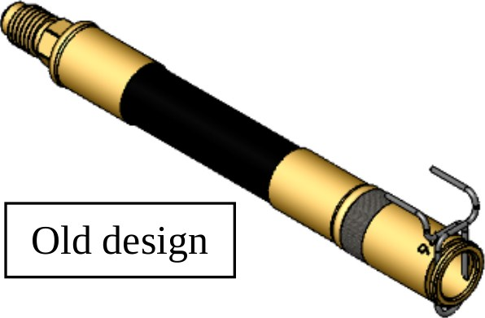
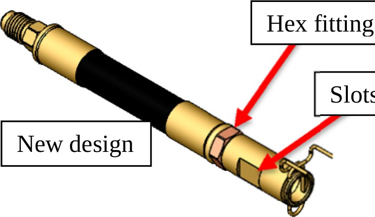

Doc no. MOC-TSB-16-06 // Vol. 16 No. 06 // Apr 6, 2016 // Fuel
3/8in Quick Disconnect Fuel Adapter
Update73048
MOC has modified the 3/8in quick disconnect fuel adapter to accommodate the larger diameter collars found on some of the newer Ford & GM models' connection to the fuel rails. After learning that these models would not fit inside the original adapter ("Old design"), MOC modified the adapter to fit these models. To help you distinguish between the Old design and New design, the outside appearance of the New design was modified. The New design, has 2 slots on the body and a hex fitting between the body and the hose.
What's new
Contact
For more information, contact the Machine & Equipment Department at 866.244.6621.


Part numbers
| Part No. | Description | Notes |
|---|---|---|
| 73048 | Old design Adapter, Fuel, 3/8" Female QD |